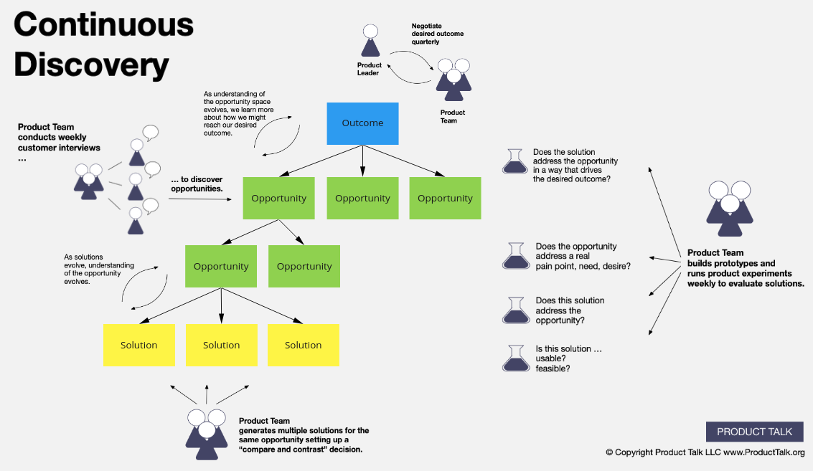

Product Discovery
What is this page?
I found out about a book that help with product/market fit but didn't read it yet. This page is my fancy TODO list (:
Continuous Discovery Habits
Discover Products that Create Customer Value and Business Value

Resources:
Summary: Talk to customers at least one a week and build a tree of needs/opportunities. When picking a need to work on, have multiple solutions/experiments.